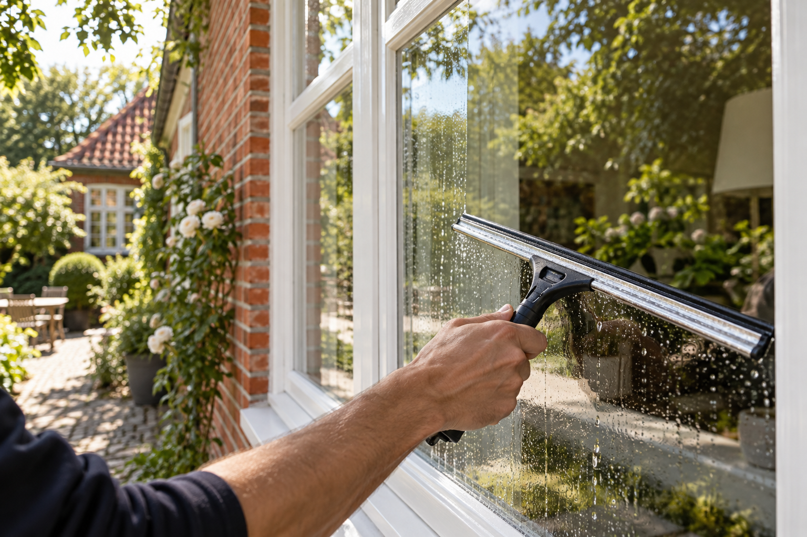

01 ↗
Vinduespudsning
Vinduespudsning ude og inde. Kontakt mig for en pris.
Kontakt Filip ↗DIN LOKALE VINDUESPUDSER I SILKEBORG
Jeg hedder Filip, og jeg pudser vinduer i Silkeborg. Kontakt mig for en pris eller en aftale.
Kontakt Filip ↗
VINDUESPUDSNING
Jeg pudser vinduer ude og inde.
Vinduespudsning ude og inde. Kontakt mig for en pris.
Kontakt Filip ↗MANDEN BAG FIRMAET
Din lokale vinduespudser i Silkeborg.
Jeg hedder Filip Faaborg Benderfeldt og driver Den Lokale Vinduespudser fra Hesselhus i Silkeborg.
Kontakt mig for en pris eller en tid.
Skriv til mig ↗Skriv hvor du bor, og om du ønsker pudsning ude, inde eller begge dele. Så vender jeg tilbage med en pris.
Jeg holder til i Silkeborg. Skriv din adresse, hvis du vil høre, om jeg kører hos dig.
Skriv til mig, hvis du gerne vil have pudset vinduer regelmæssigt.
Ved indvendig pudsning skal jeg kunne komme ind. Ved udvendig pudsning aftaler vi, om der er brug for, at du er hjemme.
KONTAKT
Skriv for en pris eller en tid.
denlokalevinduespudser@gmail.com ↗